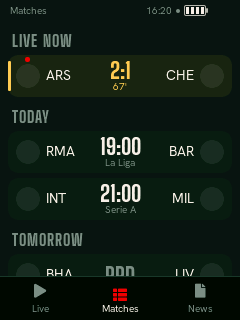
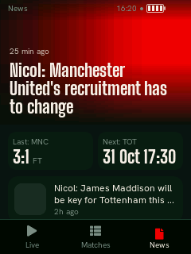
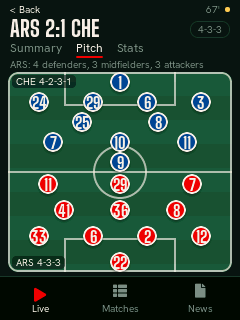
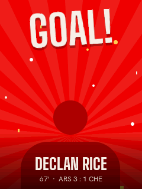
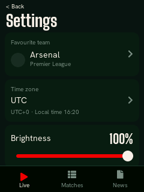

Open-source desk gadget
Your team's match,
on your desk.
A 2.8 inch touchscreen that shows the live score, today's matches, the headlines and the line-ups for your favourite team. No phone needed. It was built as a birthday gift for a friend who works where phones are not allowed.
The repository is private for now; the link works once it is public.
Interactive demo
Tap the tabs, tap a match for the line-up. Demo data, drawn shields and invented player names. Sound is off until you turn it on.
Real screenshots
These are rendered from the real UI code in the simulator, the same C++ that runs on the board. The simulator uses demo data and placeholder crests.
Live Score split in team colours 
Matches Live first, then by day 
News Lead story and headlines 
Pitch Both starting line-ups 
Goal The celebration frame 
Settings Wi-Fi, team, power
How it works
The display never talks to football websites directly. It only talks to a small helper you deploy yourself. The helper fetches public data, trims it, caches it and shrinks pictures to the sizes the screen needs. The ESP32 cannot decode or scale large images well, API quirks stay out of the firmware, and the helper can be fixed without reflashing.
On the board
Only one task, the LVGL task, ever touches the UI. Anything that can block (Wi-Fi, TLS, DNS, flash writes, audio) lives in a worker and hands results back through queues.
What it does
Live
Your team's match with the background split in both team colours, a big score, the minute and the latest event.
Matches
Live matches pinned on top, then today, tomorrow and yesterday. A dot marks your team.
News
A lead story with a picture, your team's last result and next game, then headline rows.
Match detail
Goals, cards and substitutions, a striped pitch with both starting line-ups, and stats.
Celebrations
When your team scores the screen floods with its colour, rays turn and GOAL! stamps in. A win gets a longer one.
Sound, no files
Synthesized in code: air-horn and crowd for a goal, a fanfare for a win. Only your team makes a sound. Mute-at-night and volume settings.
Your team
Pick from the top five European leagues. The choice recolours the whole interface.
Wi-Fi on the device
Scan, pick a network and type the password on an on-screen keyboard. Several networks are remembered.
Power
Battery icon, charging indicator, low-battery banners, a power key and night dimming on a schedule.
Reliability
Over-the-air updates with rollback, a watchdog, a crash counter that falls back to safe mode, and a serial console.
Measured on the board
Real numbers from one board on one desk. They are measurements, not benchmarks.
- Boot to first frame
- 1426 ms
- setup() to the panel, diagnostics build
- Wi-Fi joined
- 7.9 s
- after start, saved network
- First matches on screen
- 9.7 to 13.9 s
- after start, depends on clock sync
- Goal celebration
- 19.6 to 24.4 fps
- live build, frames 35 to 50 ms
- Swipe between tabs
- 47 to 62 ms
- per frame; render bound
- Internal RAM free, idle
- 110.8 KB
- PSRAM free 7.15 MB
- Internal RAM, lowest at start
- 65.6 KB
- with two TLS sessions open
- Watchdog reset
- 15.0 s
- after a deliberate stall of a watched task
Conditions: one Waveshare ESP32-S3-Touch-LCD-2.8 (V2) on USB power from a PC, battery connected, on a desk; one home Wi-Fi network at about -61 to -73 dBm; the real helper with 62 matches and 96 teams; measured over the serial console. Not measured: battery life, power draw, anything over several days, how the sound actually sounds. Full tables in docs/performance.md.
Build your own
Parts used
- Board Waveshare ESP32-S3-Touch-LCD-2.8, V2 (16 MB flash, 8 MB PSRAM, 240x320 display)
- Battery 3.7 V 3000 mAh LiPo with protection circuit. Check the polarity before connecting.
- Speakers Two small speakers on the board's speaker header
- Cable USB-C data cable for power, flashing and the serial console
- Case 3D-printed two-part case (design files not included yet)
Check current prices; none are listed here.
Try the simulator
No hardware, no accounts. Build the same UI code on a PC with CMake and SDL2, and press g to score.
Deploy the helper
A free Vercel account and Node 22 or newer. Add a
HELPER_TOKENvariable and deploy.Flash and provision
Flash over USB, set the helper URL and token over the serial console, then pick Wi-Fi and your team on the screen.
Honest limits
A hobby-grade project that works on the one board it was built on.
- The ESPN API is unofficial. It can change or disappear; only the helper depends on it.
- TLS checks the chain, signature and host name, but not certificate dates.
- The token is stored unencrypted in flash. Anyone with the board and esptool can read it.
- Charging is inferred from battery voltage, not sensed.
- Only the V2 board was tested. The V1 touch driver was never run on hardware.
- Swipes and long lists are render bound: frames take 45 to 70 ms, not 60 fps.
- Several things are not yet proven on hardware: real power-off, battery accuracy, how the sounds sound, an update over HTTPS, multi-day uptime.
- Wi-Fi supports WPA2-Personal and open networks only.